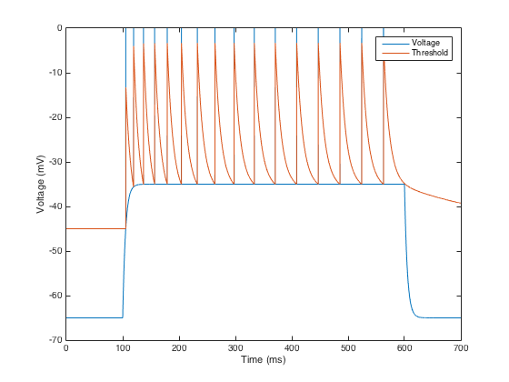

The authors original matlab and C code associated with their paper: Kobayashi R, Tsubo Y, and Shinomoto S. Made-to-order spiking neuron model equipped with a multi-timescale adaptive threshold. Frontiers in Computational Neuroscience 3:9 (2009) http://dx.doi.org/10.3389/neuro.10.009.2009 is available from the authors web site: http://research.nii.ac.jp/~r-koba/applications/pred.html The matlab code when run without parameter changes reproduces the RS spike trace in Fig 5b: 